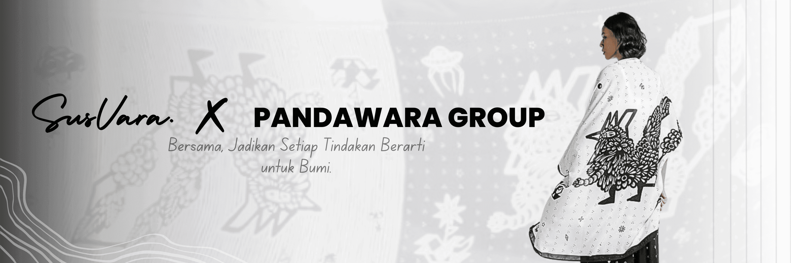

.jpg)
Di Susvara, kami percaya bahwa fashion bukan hanya tentang gaya, tetapi juga tentang dampak yang kita tinggalkan pada bumi. Sustainable fashion atau mode berkelanjutan adalah pendekatan dalam industri pakaian yang berfokus pada produksi etis, bahan ramah lingkungan, serta siklus hidup pakaian yang lebih panjang. Dengan memilih slow fashion, kita mengurangi limbah tekstil, menghemat sumber daya, dan mendukung pekerja yang mendapatkan upah serta kondisi kerja yang layak. Melalui koleksi kami, Susvara menghadirkan pakaian berkualitas tinggi yang dibuat dengan proses yang lebih ramah lingkungan. Setiap pembelian bukan hanya tentang menambah koleksi pakaian, tetapi juga menjadi bagian dari gerakan perubahan menuju industri fashion yang lebih adil dan berkelanjutan. Mari bersama-sama membangun masa depan yang lebih hijau dengan memilih fashion yang bertanggung jawab! 🌱
Jika karena alasan apa pun anda merasa sudah waktunya membuang karya SusVara atau baju baju lama anda, mohon jangan membuangnya. Tukarkan kepada kami pada campaign circularity, agar kami dapat mencegahnya berakhir di tempat pembuangan sampah yang menyebabkan menumpuknya limbah, dengan cara mendaur ulang kain kain tersebut menjadi benang baru yang berkualitas dan ramah lingkungan yang nantinya akan kami gunakan untuk membuat bundle collection"Sentuhan Bumi". Dengan menukar 3 baju lama anda, anda akan mendapatkan voucher potongan harga sebesar 30% untuk semua product kami.
© 2025 SusVara. All Rights Reserved.